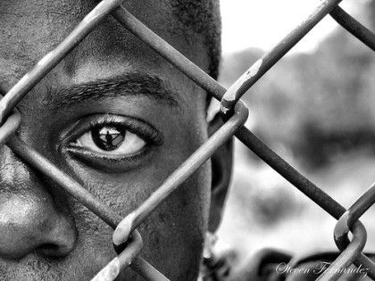
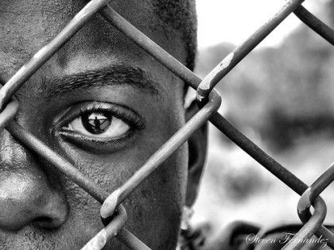

La fotografía de retrato es la modalidad fotográfica que se encarga de capturar la esencia de una persona ya sea destacando la mirada, la pose o sus cualidades físicas en general y transmitir su estado de ánimo u otro tipo de sensaciones. También se utiliza para contextualizar a alguien en un escenario concreto o explicar un suceso a través de las personas a las que afecta.
Consejos para fotografía de retrato
Te propongo varios consejos para que puedas poner en práctica y mejor tu habilidad a la hora de fotografiar personas. Es importante que practiques, ya sea mediante autoretratos, amigos o intercambios con modelos de tu ciudad. Busca en Facebook grupos de intercambio entre fotógrafos y modelos para encontrar gente que puede estar interesada en trabajar contigo.
La exposición correcta
Si encontrar la exposición correcta es ya de por sí importante en cualquier tipo de fotografía (siempre que tus fines creativos necesiten una «exposición correcta»), en fotografía de retrato cobra especial importancia medir bien la luz que hay disponible.
En un retrato cerrado en el que la cara ocupa casi por completo el encuadre, la textura de la piel es una de las protagonistas principales y si exponemos más tiempo de lo necesario la piel saldrá sobreexpuesta, destrozando la textura de la frente, pómulos, labios, etc.
Retratos en exteriores
Es importante cuando hagas retratos en exteriores elegir bien la hora del día o llevar material para «suavizar» la luz. Los mejores momentos para hacer retratos en exterior son los cercanos a la puesta y salida del sol, cuando la luz es mucho más suave que en otras horas intermedias del día.
Recuerda que si la luz es muy dura corres el riesgo de perder detalle en las texturas, las sombras aparecerán muy exageradas (sobretodo en la zona de los ojos) dando lugar a una imagen con fuertes contrastes, por no hablar de la cara de nuestro modelo intentando salir bien, sin gafas y con un sol espléndido.
La apertura de diafragma
Elegir una apertura mayor o menor en nuestros retratos, tendrá un efecto directo sobre el mensaje que quieras transmitir o la sensación que desprenderá la imagen.
Una apertura cerrada como podría ser un f/22, nos dará una profundidad de campo mayor y tanto la cara como el fondo aparecerán enfocados (dependiendo siempre de la hiperfocal).
Si por el contrario prefieres aislar al sujeto del fondo, una apertura de diafragma más abierta como un f/2.8 o f/5.6 conseguirá que el sujeto destaque frente al fondo.
Hay que tener mucho cuidado a la hora de utilizar aperturas muy abiertas, todos hemos soñado con un 50mm 1.4 para este tipo de fotografías, pero la profundidad de campo cuando usamos esas aperturas es muy reducida y si no prestamos atención, zonas como las orejas o el pelo pueden quedar desenfocadas y tal vez no sea el resultado que buscamos.
 
